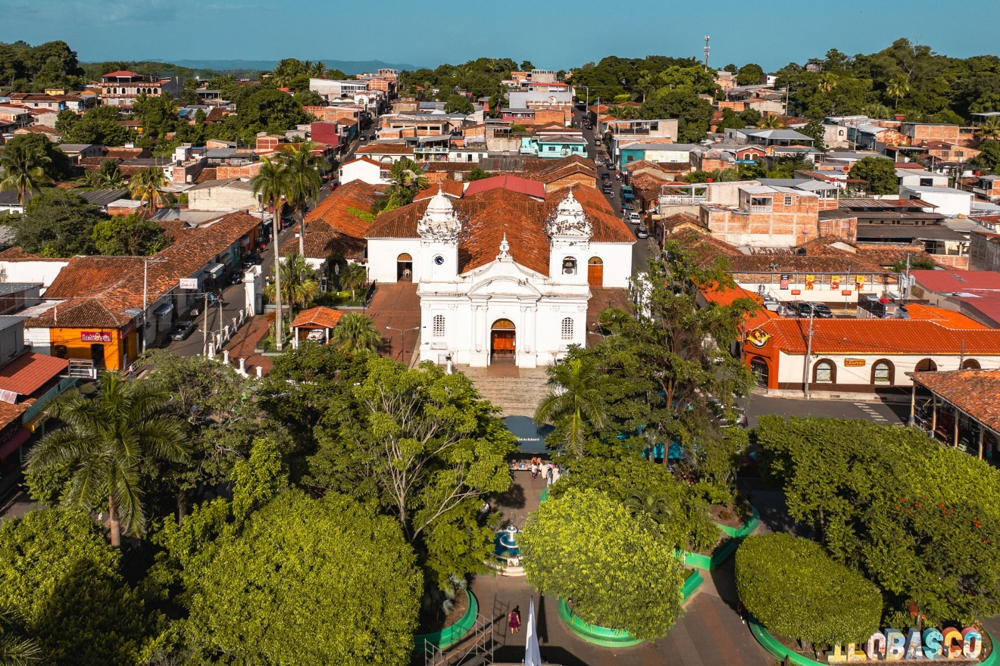
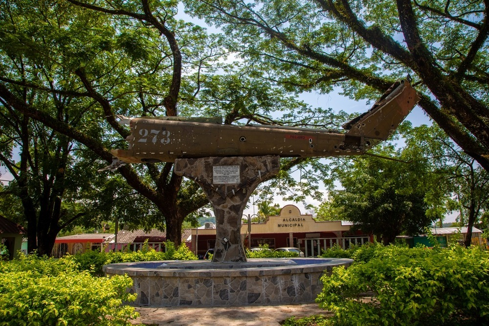

Ilobasco
Ciudad reconocida por la elaboración de miniaturas en barro,
tradición artesanal transmitida por generaciones. Las piezas representan escenas cotidianas
y forman parte del patrimonio cultural salvadoreño.

Cinquera
Destino de turismo ecológico con bosque tropical seco y senderos naturales.
El parque ecológico combina historia y naturaleza en un entorno de conservación ambiental.